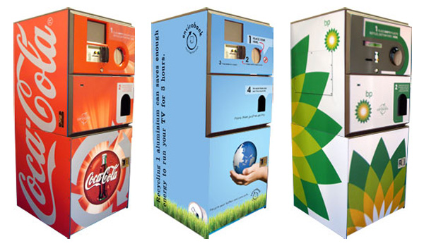

Reciclaje tecnológico
La idea principal sería crear una máquina, que a cambio de materiales que sirvan para reciclar, como botellas, papeles, etc, te devuelva recursos hechos con esos mismos materiales (maceteros de bombillas, ladrillos, lámparas con botellas de plástico, etc. Y otra opción es a cambio de plata.
